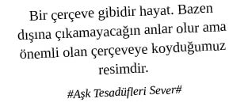

Instagram, Nashville efekti ile herkesi bir anda Fujifilm Velvia kullanıcısı haline getirdi ve post-modern Polaroid olarak tarih yapraklarındaki yerini aldı.
Loş ortamda markalı güneş gözlüğü takan insandır, Instagram Profesyoneli.
Profesyonel iş dünyasına giriş vizesi olan CV’lerde hatırı sayılır bir yere sahip hobiler bölümü de Instagram sayesinde değişti. Eskiden fotoğraf çekmek, yüzmek, satranç oynamak, kaş almak, sir ağdaya gitmek gibi hobiler revaçta iken şimdilerde profesyonel Instagram fotoğrafçılığı beyaz yaka evreninde hatırı sayılır bir hobi olarak algılanıyor. “Instagram Artist” bir title olarak arz-ı endam ediyor. O halde yine o değerli motivasyonlarımıza göz atmakta fayda var.
Bir Profesyonelin Instagram Kullanımı
Etkin çekim yapabilmek için şık bir iPhone 5 veya 4S’e ihtiyaç var. Diğer telefonlar post-modern Instagram kullanımından çok uzak olduğu için büyük puan kaybettirecektir.
iPhone’da n adet özgün, yetenekli ve mutlaka para ile satın alınmış kamera uygulamaları (Super Zoom yetkinliği olan, piksel yüksek, manuel enstantane, diyafram ayarı yapmaya imkân tanıyan) bulunmalıdır. Standart iPhone kamerası ile fotoğraf çekmek kesinlikle profesyonel değildir.
iPhone’da yetkin kamera uygulamalarına ek olarak fotoğrafları düzenleme, dizme, fotoğraflara takla attırma, Instagram’da bulunmayan atraksiyonlu efektler verme, resimlere yazı yazma vs gibi amaçlara hizmet edecek uygulamaların da tedarik edilmesi gerekmektedir.
Çalışma ortamındaki masamız, masamızın üzerinde yer alan ve yaratıcı profesyonel kimliğimizi yansıtan özgün oyuncak, takım-taklavatlar mutlaka fotoğraflanıp Kelvin filtresi ile Instagram üzerinde paylaşılmalıdır.
İş ortamında yapılan herhangi bir etkinlik (happy hour, birthday, baby shower, ideation meetings, motivation meeting, brainstorming vs) etkinlik katılımcıları, özgün oyuncakları, afiş, poster fotoğrafları profesyonelce seçilmiş doğru filtreler ve doğru etiketlerle paylaşılır.
İş Seyahatlerinde Profesyonel Instagram Kullanımı
Boarding Pass’ın fotoğrafı Early Bird filtresi ile çekilip (tercihen business koltuğu olduğunu belirten kısma odaklanarak) gidilecek yerle ilgili bir veya birkaç hashtag ile paylaşılır. Artan hashtag sayısına dikkat edilmelidir, profesyonel insan spam’cı gibi ortada dolanan her hashtag’i kullanıp fotoğrafına çerden çöpten kullanıcının üşüşmesine tenezzül etmez. Hatırı sayılı bir like durumu, özellikle yorumlarla desteklendiğinde ilgi ve alakada zirve yaptırır.
Business Lounge’un ne kadar güzel ve rahat olduğunu belirten bir enstantaneyi (alınan bir drink ya da hafif bir yiyecek görüntüsü) profesyonel kelimeler ile paylaşmak çok şık durur.
Eğer bir etkinliğe gidiliyorsa mutlaka gidilecek etkinliğin badge’inin Lo-Fi filtreli fotoğrafı ile “Ulan bu etkinlik dünyanın en önemli ... etkinliği, dünyanın en önemli tüm ...ları bu etkinliğe gider, ben de buradayım ve siz burada değilsiniz, sahi siz neden burada değilsiniz Waldo’lar?” mesajı paylaşılır.
Gidilen yerde kalınan otelin ne kadar havalı, ne kadar lüks olduğunu belirten detaylı lobi, oda fotoğraflarını Nashville filtresi ile çekip “Hep geliyoruz, işte böyle yerlerde kalıyoruz sıkıldık artık, insan salaş yerleri, samimiyeti, memleketini özlüyor!” tadında bir söylem ile paylaşmak şeytanın sağdan yaklaşması ayarında muazzam profesyonel bir harekettir.
Gidilen yerin, en havalı restoranına gidip menü, sunum ve restoranın ortamını ifade eden özgün kadrajlı, Sutro filtreli çekilen fotoğraflara ek olarak mutlaka yenen yemek hakkındaki know-how’ı gösterecek özgün yorumlara da yer verilerek paylaşımda bulunulmalıdır. Lifestyle’a hâkimiyet profesyonelin en önemli silahıdır.
Gidilen coğrafyanın gece hayatındaki en popüler mekânına intikal edilerek, mekânın girişi ve içki sunumlarıyla ilgili fotoğraflar çekilip, “Ulan Türkiye’deki mekânlar, bunların yanında çay bahçesi gibi kalır. Bir de buralarda kızlar teklif ediyor” mesajı verilir. Profesyonelin tüm mesajları kitlenin şuuraltına oynamalıdır, ortaya palas pandıras yazılan konusu maksadı belli mesajlar puan kaybettirir, amele gösterir, üzer.
Gidilen mekânda katılınan etkinlik ve toplantılara dair bol bol malzeme paylaşılır ve “Siz bizi goy goy yapıyoruz zannediyorsunuz ama eşekler gibi çalışıyoruz. Nefes alacak vaktimiz yok” mesajı verilir.
Off-site Toplantılarda Profesyonel Instagram Kullanımı
Toplantı mekânının manzarası X-Pro II filtresi ile toparlanmış bir şekilde toplantı konusu ile ilgili bir hashtag ile paylaşılır.
Toplantı kapsamında masalara dağıtılmış oyuncaklardan özgün enstalasyonlar üretip, doğru kadraj ve Kelvin filtresi ile fotoğrafını çekip, “Bu kadar yoğun toplantı gündeminde bile içimdeki sanatçıyı öldürmedim” mesajını veren sanatsal bir hashtag ile paylaşımda bulunmak özellikle pazarlama profesyonelleri için asla ıskalanmaması gereken bir yetkinlik mesajıdır.
İş Yemeklerinde Profesyonel Instagram Kullanımı
Garson yemeği servis eder etmez, kimse tabaklarına dokunmadan masanın şatafatını, doğru filtre ve başlık seçimi ile anlatmak ziyadesiyle profesyonel durur.
Katılımcıların profesyonel iş dünyasında hatırı sayılır kişiler ile mutlaka bu kişilerin puro içerken ya da samimiyetle gülerken fotoğrafları Hudson filtresi ile çekilir ve “Bu hatırı sayılır kişiler ile sık sık buluşup yemek yeriz puro içeriz, hayvan gibi samimiyiz. Bu ana has veya rastlantısal bir durum yok yani” mesajı verilir. Benzeri bir ilişkiyi Twitter’da da dozunda bir mention etkileşiminde sürdürmek büyük puan kazandırır.
Tatlı sunumları Brannan filtresi ile çekilip, “Günahımız bu olsun, akşam sporda hallederiz” diyerek hem hayatını yaşayan hem de hayatına dikkat eden profesyonel beyaz yakalı mesajı verilir.
Mekâna girmeden önce telefon arkadaşınıza verilerek, ne kadar şık olduğunuzu ve hangi mekânda nasıl giyinilmesi gerektiğini bildiğinizi gösterecek şekilde Amaro filtreli fotoğraf takipçilere ayık vaziyette iken itina ile gönderilir.
Fotoğraflar yüklenirken profesyonel hashtag kullanımı büyük puan getirir. (#igers #igersturkey #igersistanbul #instagood #instafamous #tahta #sucuk #instagramtutulması vaciptir.)
Yıllarca Canon’larda Nikon’larda çekilmiş, üzerine Photoshop ile emek harcanmış tüm fotoğrafları Instagram’a yükleyip like’a yatmak çok profesyoneldir. “Biz bu işe iPhone’la başlamadık, evveliyatımız, bu işte bir geçmişimiz, müktesebatımız var” mesajı verir, ağır puan kazandırır.
Tweetgram ile özgün profesyonel söz kombinasyonunu Instagram ile birleştirmek fark yaratır.
Çerçeveye koyduğumuz resim ne kadar gerçek ise aldığımız nefes de o kadar gerçektir. Uzunca süre çerçevenin içerisine gerçek olmayan fotoğraflar koyarsak resmin gerçek halini de unuturuz...
